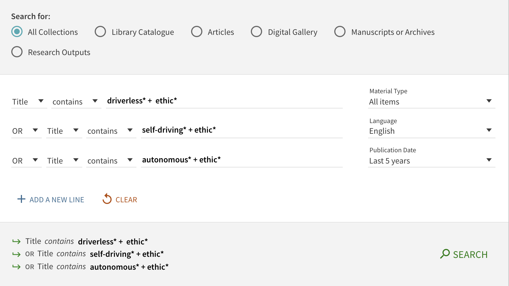
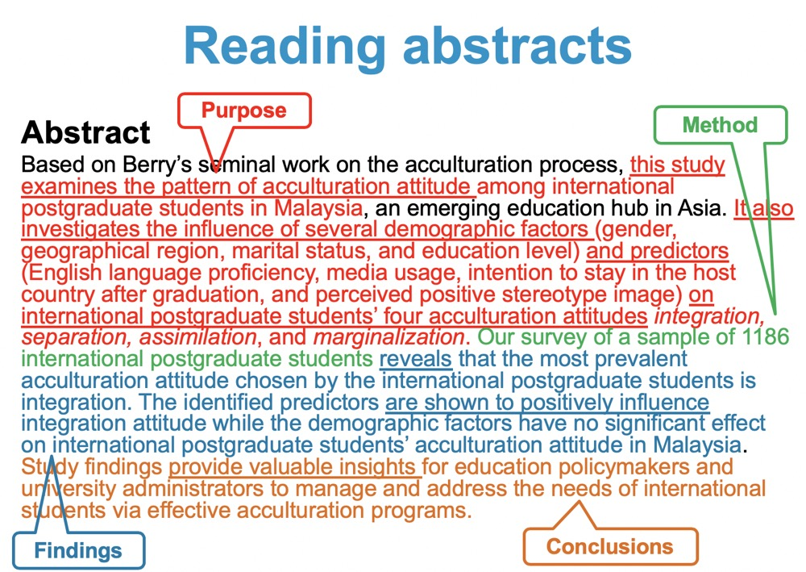
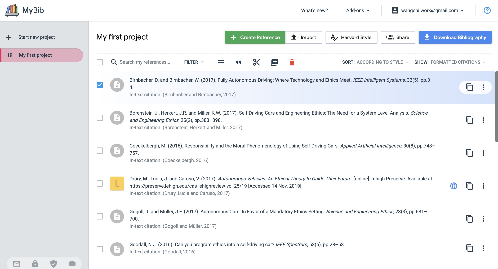
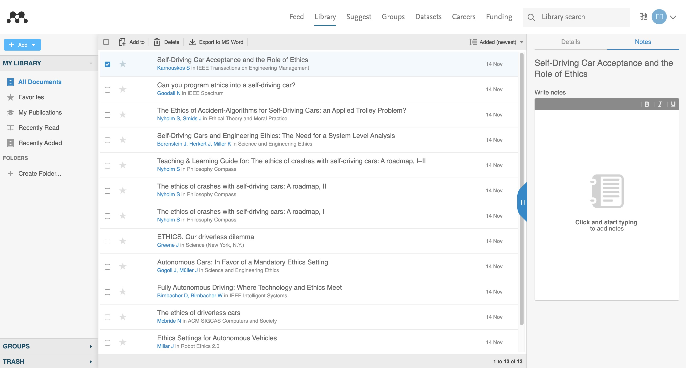
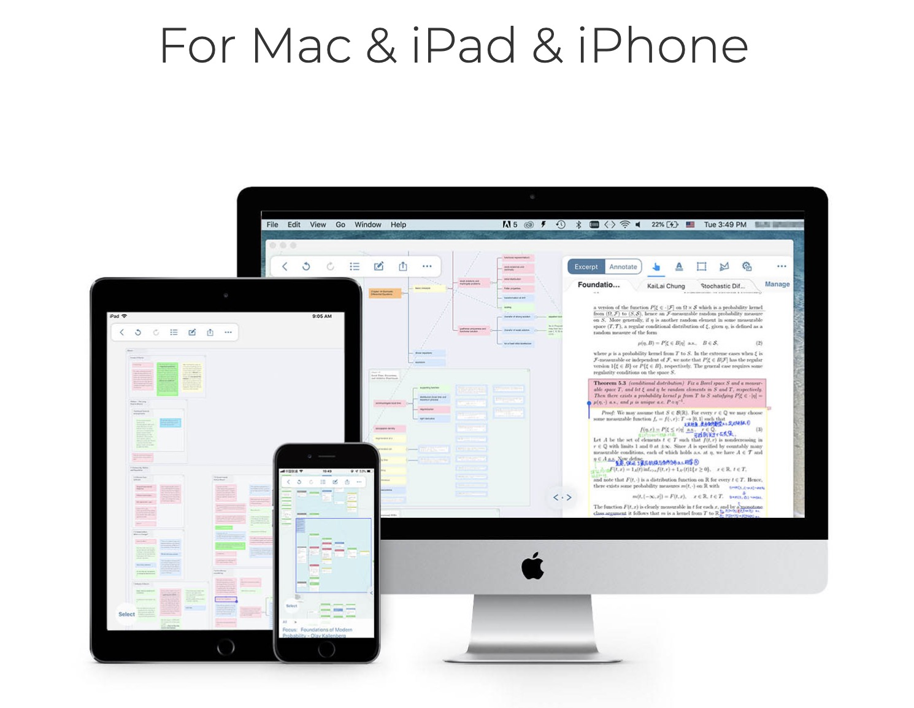

1. Introduction to Identifying the Literature
1.1. What is a Literature Review
- “The process of evaluating the work of others in the context of the work you intend to do is called a literature review…” (p. 74, Breach, 2009)
- “A literature review is a search and evaluation of the available literature in your given subject or chosen topic area.” Royal Literary Fund
- “…an intelligent appraisal of a range of sources.”(p. 63, Thomas, 2017)
1.2. The purpose of a literature review
- To compare and contrast different authors’ views on a topic
- To critically evaluate the ideas of other writers
- To highlight gaps in research
- To show how your study relates to previous studies
- To show how your study builds on and contributes to the literature of the topic
2. Key elements and language in a literature review
2.1. Find out which sentences do they usually use in following parts
- Introductory phrases
- Introducing a study / group of studies
- Summarising the content of studies / rephrasing what other authors found/said
- Commenting on existing literature
- Highlighting a gap in the literature
- Concluding phrases
2.2. Useful wwebsite
3. The Process
3.1. Preparing a literature review
- Specifying
- Define: Define your objectives (broadly) to know what you are looking for
- Prepare: Identify key words and search terms; Consider where to search for sources
- Searching and collecting
- Search: Search for relevant literature
- Read: Read titles and abstracts
- Note-making: Take notes from sources; Record bibliographic information
- Review: Review your research questions and hypotheses
- Collating
- Create: Create a matrix to organise ideas by theme
- Synthesise: Identify similarities, differences and gaps in the literature
- Writing
- Plan: Organise by theme (not source)
- Draft: Write a first draft
- Review: Re-read, peer review, tutor feedback
- Edit: Re-write
- Proofread: Final checks prior to submission
4. Searching for sources
4.1. Undertaking a literature search
- The library : NUsearch
- The internet
- Google Scholar
- Google Books
- JSTOR
4.2. Search terms
For an effective search online, you need to have good search terms.
- Key concepts from your topic
- Synonyms
- Spelling variations
Vidoe: Search Skills Thinking About Keywords
4.3. Filtering your search
- Publication date
- Source type (e.g. book, journal article)
- Author
- Topic
- Language

4.4. Textbook Reading
- PP. 70~83
5. Evaluating sources
5.1. CRAAP
CRAAP helps you to evaluate your sources by using five criteria.
5.1.1. C(Currency)
This criteria relates to the timeliness of the source
- When was the information published/posted?
- Do you have the most up-to-date version/edition?
- Is it important to have current information, or will older sources work as well?
- Websites: Are links in the text working?
5.1.2. R(Relevance)
This criteria relates to how important the information is to you
- Does the information relate to your research?
- Who is the intended audience?
- Is the information at an appropriate level i.e. not too simple/too advanced for your needs?
- Have you looked at a range of sources to be able to judge if this source is relevant?
5.1.3. A(Authority)
This criteria relates to where the information came from
- Who is the author/publisher?
- What are the credentials of the author/organisation?
- Can you trust the source? What are their credentials?
- Websites: Is contact information provided?
- Websites: Is it easy for you to find out more about the author/ organisation?
- Websites: What is the domain name e.g. co.uk?
5.1.4. A(Accuracy)
This criteria relates to the reliability of the source
- Where does the information come from?
- Is the information supported by evidence?
- Has the information been reviewed or refereed?
- Does the language or tone seem unbiased and free of emotion?
- Are there spelling or grammar mistakes?
5.1.5. P(Purpose)
This criteria relates to the reason the information exists
- What is the purpose of the information? Is it to inform, teach, sell etc.?
- Is the information fact, opinion or propaganda?
- Does the point of view appear objective and impartial?
- Is there any bias (e.g. political, cultural, personal)?
6. Reading skills
6.1. Reading strategies
- skimming
- scanning
- reading intensively
6.2. Reading abstracts
- What was the purpose of the study?
- How was the research conducted?
- What were the results?
- What are the conclusions/implications of this research?
- How relevant is the article to your research topic?

7. Refining research questions
7.1. Criteria for a research question
- Is it answerable?
- The concepts must be distinct and testable
- Is it clear?
- Its meaning must be explicit
- Does it have theoretical significance or practical relevance?
- It can be basic or applied research
8. Reading journal articles
8.1. Journal article structure
- Abstract
- Introduction
- Literature Review
- Methods / Methodology
- Results
- Discussion
- Conclusion / Recommendations
- Reference List
- Appendices
8.2. Reading strategies
SQ2R
- S(Survey): Skim the whole piece, remembering that key nuggets of information occur at the beginning and end of a chapter or article, and at the beginning and end of paragraphs.
- Q(Question): Now ask yourself questions, related especially to what you intend to find out. Don’t worry too much about stuff that irrelevant: stick to questions that are important to you.
- R(Read): Read the whole piece, again fairly quickly, don’t get hung up on difficult bits - and, if the book is yours, mark it with a highlighter or a pencil for key words or phrases, especially those that are relevant to your questions.
- R(Recall): Recall what was in the piece(having shut the book first). Jot down notes. If you aren’t able to remember anything, start again with survey.
8.3. Critical reading method
9. Note-taking
9.1. Record keeping
Keep a record of the sources you have read.
- It will help you to stay organised
- It will help you to locate sources again
- The log will help you to prepare your reference list
MyBib

Mendeley

9.2. Note-taking methods
- Linear notes
- Pattern notes
- Cornell method
- Annotate text
9.3. Note-taking Tools
- MarginNote

9.3. Critical reading notes
10. Critiquing sources
10.1. What is a critique?
- Analyses, interprets and evaluates research
- Evaluates the strengths and weaknesses of the research
- Is not necessarily critical!
10.2. A strategy for critiquing research
- A useful strategy for critiquing a research article is to systematically appraise each component
- Research terminology: It is important you are familiar with key terms (and synonyms)
- Findings are sometimes called results
- The discussion section is sometimes called the conclusion
- Research appraisal is another term for evaluating research
- Understanding the structure of articles
- Some articles include the literature review in the introduction whereas others present it separately afterward
- Research questions appear in the literature review in some articles but others present them in the introduction
10.3. Critiquing a journal article
10.3.1. Critiquing the abstract
- Does it present the research questions and purpose of the research?
- Does it detail the methods adopted?
- Does the abstract present the findings?
- Does it present a discussion of the findings?
10.3.2. Critiquing the introduction
- An introduction should be judged in terms of:
- how well it justifies the purpose of the research
- how clearly it presents the research questions
- how comprehensively it reviews relevant theories
- Research questions should be appraised by considering their:
- clarity
- relevance
- importance
- practicality
10.3.3. Critiquing the literature review
- Is the literature review broad, yet focused on the issue?
- Is there historical as well as contemporary material to put the area of study into context?
- Is there convincing evidence to support assertions?
- Does it fairly represent opposing views?
- Does the literature review use a theoretical framework?
- Does it reveal gaps in the knowledge which this research will fill?
10.3.4. Critiquing methods
10.3.4.1. Research design
- Is the research design adequately described and justified?
- Is it qualitative, quantitative or mixed method (both quantitative and quantitative)?
- Have the authors considered the appropriateness of each design, and explained how the chosen design suits the research questions?
- Are you convinced that the design is appropriate to the research?
10.3.4.2. Sampling
- How were respondents selected?
- What sampling type was used? For example, probability or non-probability?
- Is the sampling type sufficiently described and justified?
- How many respondents were selected?
- Is the sample representative?
- Sampling strategy can only be appraised if it is adequately described, therefore consider if you can critique the sampling strategy.
10.3.4.3. Data collection
- Whether the methods (for example, interviews, questionnaires) used to collect data were sufficiently described and justified?
- Why the methods were selected. Do you think they were appropriate to the research questions?
- How many interviews or questionnaires were undertaken? What type of interview was selected: structured or semi-structured? Is the type of interview selected appropriate?
- whether the research setting was fully described? Are the merits of the research setting considered? For example, did the setting help or hinder data collection?
- How the researcher gained access to respondents? Are there any ethical or validity issues associated with their approach? For example, did they use gatekeepers?
10.3.4.4. Pilot studies
- Were the methods sufficiently tested?
- Are the pilot study procedures fully described and justified?
- Were the pilot studies appropriate?
- What did the researchers learn from the pilot studies?
- Were the pilot study results adhered to or ignored?
10.3.4.5. Ethics
- Was due care and attention given to the ethical issues involved in the research? Were ethical procedures comprehensively documented? For example, informed consent, confidentiality, anonymity and transcript validation.
- Did the researchers consider the ethical issues related to all aspects of the research? For example, access to respondents, seeking informed consent, protecting confidentiality in data analysis and in presenting findings.
10.3.4.6. Analysis
- Once the data was collected, how was it analysed? For example, coding, statistical tests
- Are the analytical procedures adequately described and justified?
- Do you fully understand precisely how the data was analysed?
- Why were the analytical procedures chosen?
- Do you think these procedures were appropriate to the data?
10.3.5. Critiquing findings
- If the researcher includes particular forms of analysis, such as graphs or tables, in the article, he or she must relate them to the research question. (Such material cannot be presented in isolation.)
- Whether all findings are accompanied by analytical comment otherwise it is just a very long list of data!
- Are the findings clearly presented? Are they presented in context?
- Can you assess whether or not the findings are representative of the data? For example, are the findings from all data collection methods presented?
10.3.6. Critiquing discussion
- Is the discussion placed within a broader context? Is it closely related to the literature review?
- Would you arrive at the same conclusions?
- Are there are limitations to the research, and are they addressed in the discussion?
- What has this research added to the body of knowledge?
- How could or should it affect future research? Does it suggest any potential future research projects?